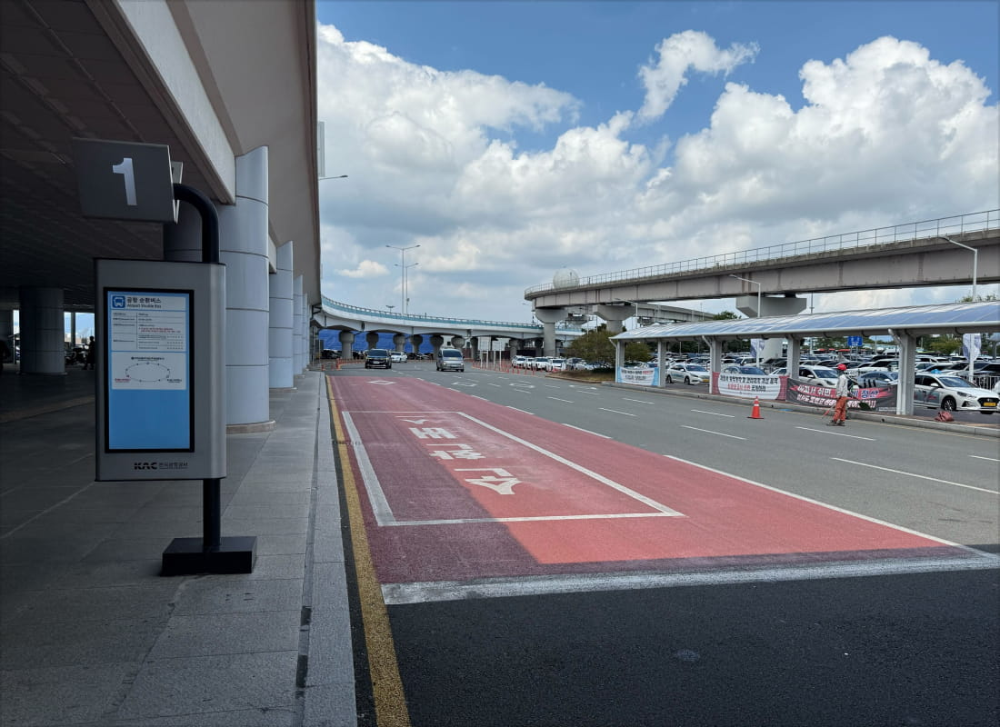

공항 호텔 입국 셔틀
김해공항·부산역에서 해운대 공식호텔(시그니엘·웨스틴조선·파크하얏트)까지. 입국일 시간표 기준 운행하는 유료 개별 신청 셔틀입니다.
Route
김해국제공항 · 부산역(KTX) → 해운대 공식호텔 · 약 40~60분
Departures
10:00
11:00
13:00
15:00
17:00
19:00
Fare
편도
₩15,000
· 소아 ₩10,000부터
운영일
2026.10.21(수) ~ 10.22(목) · 45인승 버스 · 유료 개별 신청
출발 시각 및 요금은 현재 기준 임시 안내이며, 확정 전 변경될 수 있습니다.
Shuttle Booking
RIDEUS 공항 셔틀
- 출발지 · 날짜 · 인원 선택
- 좌석 현황 실시간 확인
- 안전 결제 · 즉시 바우처 발급
예약·결제는 예약 페이지에서 진행됩니다
운영 2026.10.21(수) ~ 22(목)
차량 45인승 버스
배차 20~30분 간격
유료 · 개별 신청
운행 노선 · Routes
공항·역에서 해운대까지, 2개 노선
입국일(10/21~22)에 운행하는 입국 셔틀 노선입니다. 도착 거점에서 해운대 공식호텔 인근까지 운행합니다.
Route 1
김해국제공항 해운대 인근 (공식호텔)
약 1시간
Route 2
부산역 (KTX) 해운대 인근 (공식호텔)
약 40분
탑승 위치 · Boarding
어디서 타나요?
도착 거점별 셔틀 탑승 위치입니다. 안내 데스크에서 RIDEUS 셔틀 탑승을 도와드립니다.

김해국제공항PUS
국제선 청사 1층 도착층, 셔틀버스 정류장. 입국 게이트 인근 RIDEUS 안내 데스크에서 탑승권을 확인합니다. Route 1 · 해운대 인근까지 약 1시간.

부산역 (KTX)
부산역 광장 셔틀 승차장. 서울-부산 KTX 도착 후 연결. Route 2 · 해운대 인근까지 약 40분.
안내 · Information
이용 안내
운행 · 예약
- APHRS 2026 참가자 대상 유료 개별 신청 셔틀입니다.
- 입국일 2026.10.21(수)~22(목) 운행 · 45인승 버스 · 배차 20~30분(확정 시간표는 예약 화면에서 안내).
- 좌석은 예약(신청) 기준이며, 사전 신청분에 한해 탑승할 수 있습니다.
- 탑승 위치에 출발 5분 전까지 도착해 주세요. 좌석은 지정되지 않습니다.
- 실시간 위치(트래킹)는 제공되지 않으며, 교통 상황에 따라 도착 시간이 달라질 수 있습니다.